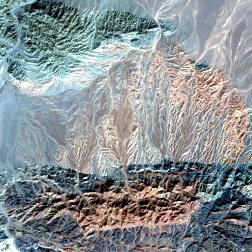

Benchmark / Near-lossless / s2-l1c-10m-4 / s2-l1c-10m-4-34
s2-l1c-10m-4-34
gobi · 2023-09-19 · sample details

Metadata
| id | s2-l1c-10m-4-34 |
|---|---|
| source | COPERNICUS/S2 (Sentinel-2 MSI Level-1C) |
| asset | COPERNICUS/S2/20230919T035541_20230919T035604_T48TVN |
| crs | EPSG:32648 |
| transform | 497760.0 10.0 0.0 4763600.0 0.0 -10.0 |
| datetime_start | 2023-09-19T04:06:23.308Z |
| datetime_end | 2023-09-19T04:06:23.308Z |
| bands | B2|B3|B4|B8 |
| shape | 4x512x512 |
| dtype | uint16 |
| unit | DN |
| scale | 1 |
| offset | 0 |
| nodata | 0 |
| input_sha256 | a5892a1e6599a4acdfdb7940015e573bca4f5fab75103697c816411148945d27 |
| site | gobi |
| regime | bare |
| lon | 105.004 |
| lat | 43.002 |
| spacecraft | Sentinel-2A |
| mgrs_tile | 48TVN |
| processing_baseline | 05.09 |
| radio_add_offset | -1000|-1000|-1000|-1000 |